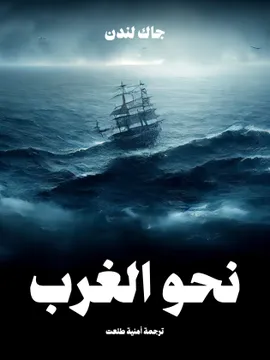

نحو الغرب

قراءة عربية أصلية محددة النطاق في الصفحات 6، 7 من ملف PDF المرتبط، وليست تلخيصا كاملا للكتاب. نناقش ما تدعمه هذه المقاطع فقط.
قبطان في مواجهة كيب هورن
في افتتاحية هذا النص البحري لجاك لندن تتلاحق العواصف: رياح غربية تعصف بالسفينة شرقًا كلما حاولت الغرب، ومضيق «لومير» الذي انقلبت فيه الرياح شمالًا، ومقياس ضغط هبط إلى ٨٢٫٨٨، وشهادة قبطان قضى ثلاثين عامًا في البحر بأنه لم تهب عاصفة بتلك القوة من قبل. صورة الإنسان المصر على اتجاه واحد أمام طبيعة لا تعرف التفاوض.
زاوية وحدود القراءة
هذه قراءة في الافتتاحية من الصفحتين 6 و7 من الترجمة العربية، لا حكمًا على القصة كاملة ولا على الترجمة. نقرأ مغامرة الإبحار بوصفها عالم لندن البحري في نهايات القرن التاسع عشر، ولا نستدل بها على طرق ملاحة أو أحوال بحرية حالية.
الطبعة والقراءة
هذه الترجمة العربية صادرة ومتاحة مجانًا من مؤسسة هنداوي بشكل قانوني؛ حيث إن نص العمل الأصلي يقع في نطاق الملكية العامة تبعًا لقوانين الملكية الفكرية.
تنزيل PDF المجاني ↓ القراءة والمصدر الرسمي ↗